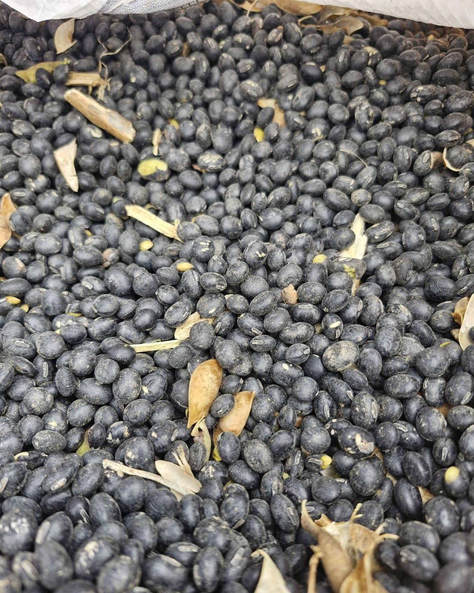

수확 후 선별 전 낱알 사진입니다. 판매 상품 사진은 포장 후 새로 올릴 예정입니다.
서리태 오픈 예정
검은 껍질에 알이 굵은 콩입니다. 서리가 내릴 무렵 거둔다고 해서 서리태라고 부릅니다. 밥에 넣으면 구수하고 포슬포슬한 식감이 살아납니다.
| 품목 | 콩(서리태) |
|---|---|
| 원산지 | 국산(전북 김제시) |
| 생산 연도 | 2026년산 |
| 판매원 | 유한회사 한걸음 농업회사법인 |
용량 · 가격
이렇게 드세요
- 서리태 콩밥충분히 불린 뒤 쌀과 함께 지으면 구수한 콩밥이 됩니다.
- 콩자반간장·조청에 조려 밑반찬으로 좋습니다.
- 콩물·콩국수삶아서 곱게 갈면 진한 콩물이 됩니다.
- 두유삶은 콩을 물과 함께 갈아 걸러 드세요.
손질 팁 · 콩밥용으로는 반나절(6시간 안팎) 정도 물에 불리면 부드럽게 익습니다.
보관법
직사광선을 피해 서늘하고 건조한 곳에 두세요. 개봉 후에는 밀봉해서 냉장 보관하면 습기와 벌레를 막을 수 있습니다.
농산물 특성상 작은 돌이나 꼬투리 조각이 섞여 있을 수 있으니 깨끗이 씻은 뒤 조리하세요.